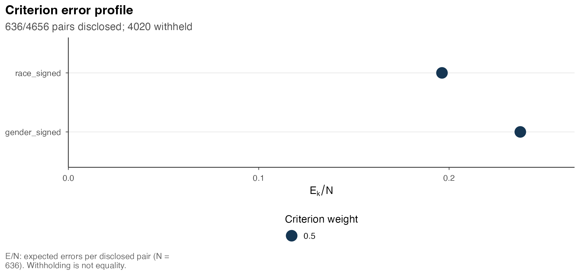
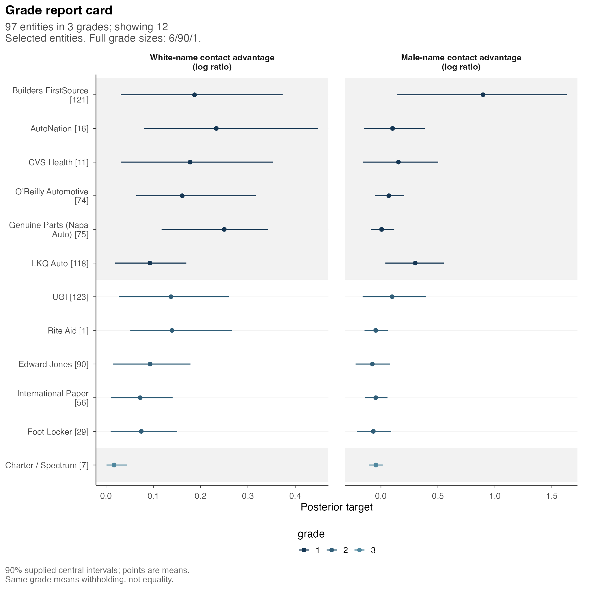
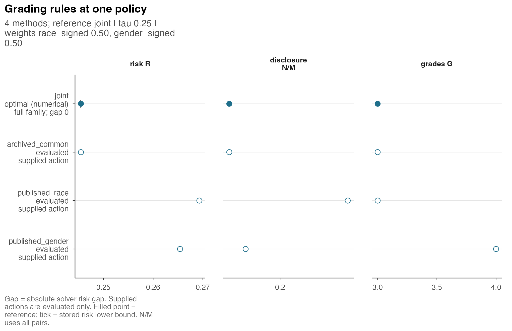

Grading large employers on race and gender contact gaps
Source:vignettes/a3-krw-race-gender.Rmd
a3-krw-race-gender.RmdWhen an accountability study measures two outcomes on the same
organizations, a single common grading has to decide which pairs of
organizations can be ordered across both criteria and which pairs should
remain unordered. Here we walk through a two-criterion common grading of
the 97 U.S. employers in pr_case_krw, adapted
from the replication archive of Kline, Rose, and Walters (2024), A
Discrimination Report Card.
All posterior inputs and optimization results below are stored in the package and loaded without fitting a model or running a solver during rendering.
Targets, source data, and license
pr_case_krw is adapted from Kline, Rose, and Walters
(2024), Replication Data for: A Discrimination Report Card
(titled Data and Code for: A Discrimination Report Card on openICPSR E198284V1). The
underlying counts come from that study’s resume correspondence
experiment, so the grades below summarize modeled callback gaps in those
experimental data rather than current hiring practices or causal effects
of workplace interventions.
library(postrank)
krw <- pr_case_krw
dim(krw$input$e)
#> [1] 97 97 2
krw$input$targets
#> race_signed
#> "log(p_white) - log(p_black); larger white-name contact advantage means higher reporting priority"
#> gender_signed
#> "log(p_male) - log(p_female); larger male-name contact advantage means higher reporting priority"Both criteria are signed log callback-rate ratios:
-
race_signed: , the white-name callback advantage; -
gender_signed: , the male-name callback advantage.
Larger values receive higher priority (grade 1) on both criteria.
Because gender_signed keeps its sign, negative values
represent a female-name callback advantage; folding
gender_signed to its absolute magnitude answers a different
question (examined in the final section). Posterior means and intervals
are reported on this same log-ratio scale because
generally differs from
.
The replication archive README states: “The data are licensed
under a Creative Commons/CC-BY-NC license” (version unspecified).
pr_case_krw and its stored results retain that
noncommercial CC-BY-NC condition separately from
postrank’s MIT code license, and no endorsement by the
original authors is implied (see ?pr_case_krw and the
installed DATA-NOTICE.md).
Continuous midpoint-cell posterior
In the replication archive, empirical-Bayes posteriors are stored on
discrete grids with the estimated prior held fixed. To form a tie-free
continuous input for postrank_probabilities(),
pr_case_krw$input distributes each grid node’s posterior
mass uniformly across the continuous cell between adjacent grid
midpoints (with nonnegative support on the lowest race cell), holding
the archive’s empirical-Bayes prior fixed without refitting or normal
approximation. Both the 97 x 97 x 2 directional-error array
e[i, j, k] and the matching 90% equal-tail marginal
intervals integrate that same continuous midpoint-cell law, assuming
conditional independence across firms given the fixed empirical-Bayes
prior.
In krw$reference$archive_pi, raw holds the
archive’s original discrete-grid comparison probabilities. The
plotting version keeps the upper triangle, sets each
lower-triangle entry to one minus its transposed entry, and sets the
diagonal to 0.5. The archive’s grade generator also replaced exact zeros
with 1e-7. The grade_generator_convention
field documents that rule. The continuous-cell input uses the integrated
probabilities described above. Because krw$input supplies
criterion-by-criterion pairwise probabilities and marginal intervals
without posterior draws or a within-firm joint race-gender distribution,
it supports weighted directional-error loss across the two criteria
while leaving composite race-plus-gender scores and draw-based Monte
Carlo diagnostics unavailable.
Two-criterion loss and example settings
In this example’s two-criterion problem (distinct
from the single-criterion settings in the KRW replication archive, which
we compare later), we give equal weights (0.5 and
0.5) to race_signed and
gender_signed, set the unordered-pair cost to
tau = 0.25, and cap the report at G_max = 4
grades:
settings <- postrank_settings(
weights = c(race_signed = 0.5, gender_signed = 0.5),
tau = 0.25,
G_max = 4L
)Across the unordered firm pairs, a grading orders pairs and leaves pairs unordered. With expected wrong-direction counts on criterion , the weighted loss is
The weights 0.5 and 0.5 average expected
wrong-direction errors across the two criteria rather than adding the
two log-ratio estimates into a single index. Placing all 97
firms in grade 1 is allowed and gives loss
by leaving every pair unordered, without claiming that the firms have
equal callback gaps.
Recomputing this grading requires a solver (Gurobi is the default and
needs a license; backend = "highs" uses the open-source
highs package from install.packages("highs")).
The solver call is shown below with eval = FALSE, and the
stored result from an equivalent call is loaded with
postrank_example():
analysis <- postrank(
krw$input, settings = settings,
level = 0.90,
backend = "highs",
control = postrank_control(time_limit = 30, threads = 1L, seed = 1304L),
fragility = FALSE
)
analysis <- postrank_example("case_krw_signed97")Common grading, risk, and criterion error rates
analysis
#> <postrank_analysis> 97 entities in 3 grades (sizes 6 / 90 / 1)
#> 2 criteria: race_signed, gender_signed.
#> Posterior loss: 0.2455.
#> Disclosed 636 of 4656 pairs (13.7%); withheld 4020.
#> Expected error among disclosed pairs: race_signed 0.196; gender_signed 0.237.
#> Solver: Optimal within solver tolerances.
#> Optimization gap: 0; requested absolute gap 1e-08.
#> Prepared: report card.
#> Grade 1 has highest priority; a shared grade withholds the comparison.
#> 97 entities; membership in get_grades(x)
#> ! 1 warning recorded: Reported lower bound exceeded the validated action ris...
#> i summary(x) explains the loss, settings and bounds; get_grades(x) returns
#> all grades.
get_risk(analysis)
#> $risk
#> [1] 0.2454704
#>
#> $lower_bound
#> [1] 0.2454704
#>
#> $gap
#> [1] 0
#>
#> $status
#> [1] "optimal"Although G_max = 4 allows up to four grades, the stored
grading uses 3 grades containing 6 / 90 / 1
firms (table(get_grades(analysis))). It orders
636 of the 4,656 firm pairs
(13.7%) and leaves 4,020 pairs unordered,
achieving weighted loss 0.245470 compared with
0.250000 for leaving all pairs unordered. (In the printed
output, "disclosed" means ordered pairs,
"withheld" means pairs left unordered, and
"risk" means posterior expected loss.) Placing
90 of the 97 firms in grade 2 reflects
substantial posterior overlap at tau = 0.25.
The solver finished with status "optimal" and gap
0. As noted by the printed warning, the solver’s raw lower
bound exceeded the checked grading’s loss by 2.78e-17
(inside the bound-check tolerance 1.19e-09) and was clamped
to the loss; see Computing grades,
choosing settings, and reading solver bounds. That zero gap
describes optimization over this 97 x 97 x 2 probability
array and does not verify the continuous cell approximation or the
empirical-Bayes prior.
profile <- get_profile(analysis)
knitr::kable(profile[, c("criterion", "weight", "E", "E_over_N", "E_over_M", "risk")],
digits = 4, row.names = FALSE)| criterion | weight | E | E_over_N | E_over_M | risk |
|---|---|---|---|---|---|
| race_signed | 0.5 | 124.8246 | 0.1963 | 0.0268 | 0.2427 |
| gender_signed | 0.5 | 150.9958 | 0.2374 | 0.0324 | 0.2483 |
Across the 636 ordered firm pairs, expected
wrong-direction errors per ordered pair (E_over_N) are
0.196 (19.6%) on race_signed and
0.237 (23.7%) on gender_signed
(E_over_M divides by all 4,656 pairs instead,
giving 0.0268 and 0.0324). Both ratios are
posterior expectations rather than counts of observed mistakes.
postrank_plot_profile(analysis, show = "E_over_N")
Open full-size figurePosterior expected wrong-direction errors per ordered pair (E/N) on race_signed and gender_signed for the 97-firm common grading.
Report card for selected firms
To keep the report card legible while showing all three occupied
grades, we display all 7 firms outside grade 2
(6 in grade 1 and 1 in grade 3) together with
5 evenly spaced firms from grade 2. Filtering
entities in postrank_plot_report_card()
changes only which rows are drawn; all 97 firms remain in
as.data.frame(analysis):
grades <- get_grades(analysis)
largest_grade <- as.integer(names(which.max(table(grades))))
middle_ids <- names(grades)[grades == largest_grade]
selected <- c(
names(grades)[grades != largest_grade],
middle_ids[round(seq(1, length(middle_ids), length.out = 5))]
)
units_df <- krw$units
firm_labels <- setNames(
paste0(units_df[["firm_name"]], " [", units_df[["entity_id"]], "]"),
units_df[["entity_id"]]
)
firm_labels <- vapply(firm_labels, function(z)
paste(strwrap(z, width = 23), collapse = "\n"), "")
postrank_plot_report_card(
analysis, entities = selected, entity_labels = firm_labels,
criterion_labels = c(
race_signed = "White-name contact advantage\n(log ratio)",
gender_signed = "Male-name contact advantage\n(log ratio)"
), ncol = 2
)
Open full-size figurePosterior means and 90% equal-tail marginal intervals on race_signed and gender_signed for 12 selected employers, grouped by their 97-firm common grades.
Horizontal bars show 90% marginal intervals from the continuous
midpoint-cell posterior (available for all 97 firms via
as.data.frame(analysis, what = "report_card")). Note that
krw$units holds the unshrunk firm-level log-gap estimates
and standard errors (race_estimate, race_se,
gender_estimate, gender_se), which differ from
the empirical-Bayes posterior means and intervals plotted above.
Evaluating archived cards under one common loss
Kline, Rose, and Walters (2024, Figures 7 and 14, pp. 2505 and 2517)
construct single-criterion report cards
(krw$reference$single_criterion) at benchmark preference
parameter
,
which corresponds to
,
allowing up to 97 grades (3 occupied grades on
race and 4 on gender without industry controls) and
optimizing one target at a time. Because both the objective and the
withholding cost differ from our two-criterion setting
(tau = 0.25, equal weights, G_max = 4), their
single-criterion losses cannot be compared directly with
0.245470.
Instead, postrank_compare() evaluates those published
single-criterion grade vectors—alongside the companion study’s stored
two-criterion reference vector
krw$reference$signed_core$grade
(archived_common)—on the current krw$input
probabilities and two-criterion settings. Each supplied
vector is scored as a fixed action (not a new solve or exact optimality
claim over alternative probability laws;
baselines = character() omits the built-in score-cut
baselines):
comparison <- postrank_compare(
analysis,
archived_common = krw$reference$signed_core$grade,
published_race = krw$reference$single_criterion$grade$race,
published_gender = krw$reference$single_criterion$grade$gender,
baselines = character()
)
knitr::kable(comparison$table[, c("method", "risk", "N", "G", "status", "family_feasible")],
digits = 6, row.names = FALSE,
col.names = c("Grading", "Two-criterion loss", "Ordered pairs", "Grades", "Status", "Within G_max"))| Grading | Two-criterion loss | Ordered pairs | Grades | Status | Within G_max |
|---|---|---|---|---|---|
| joint | 0.245470 | 636 | 3 | optimal | TRUE |
| archived_common | 0.245470 | 636 | 3 | evaluated | TRUE |
| published_race | 0.269304 | 1324 | 3 | evaluated | TRUE |
| published_gender | 0.265418 | 731 | 4 | evaluated | TRUE |
postrank_plot_compare(comparison)
Open full-size figureTwo-criterion loss (tau = 0.25, equal weights) for the common grading and three archived grade vectors evaluated on the continuous midpoint-cell probabilities.
archived_common agrees with joint on all
4,656 pairs (0 changed pair relations). On
this two-criterion loss, published_race orders
1,324 pairs with loss 0.269304 and
published_gender orders 731 pairs with loss
0.265418. That comparison describes how single-criterion
cards perform when judged on a two-criterion objective; it does not mean
a two-criterion card is better when a study’s goal is race alone or
gender alone.
Holding the archived_common grades and their 636 ordered
pairs fixed, the loss is 0.24547010019 using the original
discrete-grid probabilities and 0.24546990279 using the
plotting probabilities
(krw$reference$signed_core$archive_metrics$risk). The
continuous midpoint-cell loss is 0.24547041087
(krw$reference$signed_core$cell_metrics$risk), about
5.08e-07 higher than the plotting-based loss.
Signed versus folded gender targets and scope of stored runs
krw$alternatives includes single-criterion inputs
(race and gender) plus a two-criterion input
absolute_gender that keeps race_signed and
folds gender to |log(p_male) - log(p_female)| across the
continuous cells (including cells straddling zero). Folding gender gives
high priority to large callback advantages in either direction
(male-name or female-name), changing the substantive target even when
weights, tau, and G_max stay the
same.
Additional reference records in krw$reference document
which problem specifications from the background replication study were
solved and bundled in pr_case_krw; see
?pr_case_krw.
Where next
- For a smaller two-criterion walkthrough, see Getting started: grading with one or two criteria.
- To build a
postrank_probabilities()input from your own numerical integration, read Preparing your posterior draws and comparison probabilities. - To inspect result tables or run your own sensitivity grid, read Reading and exporting grading results and Figures and sensitivity to reporting settings.
- For the theory of multi-criterion weighting versus composite targets, see Combining several criteria in one common grading.